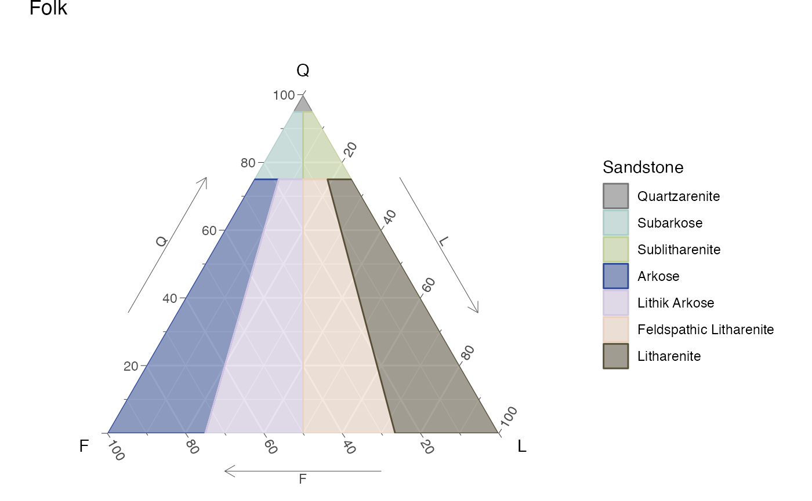
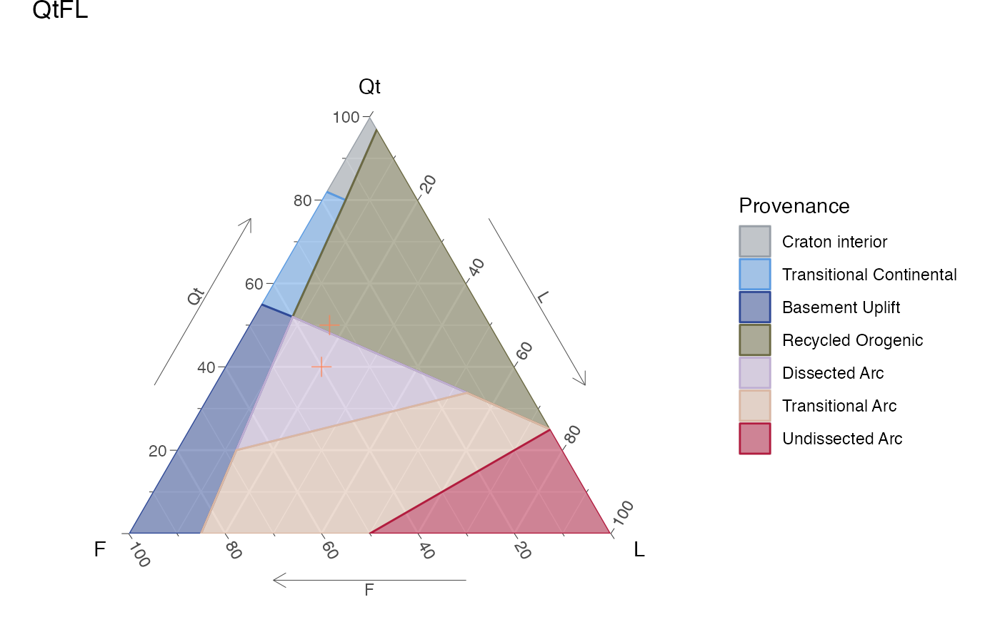
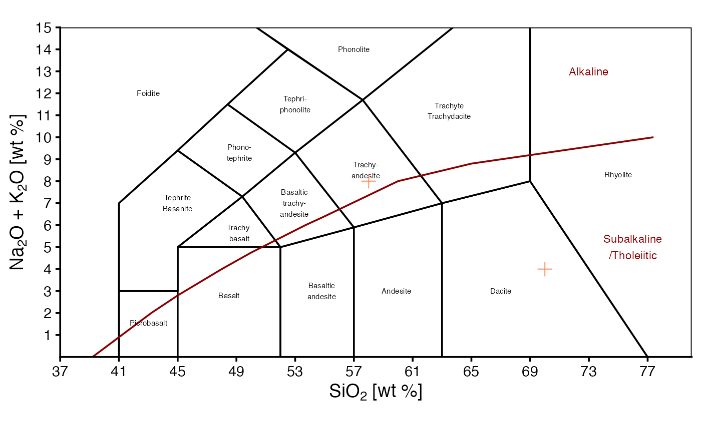
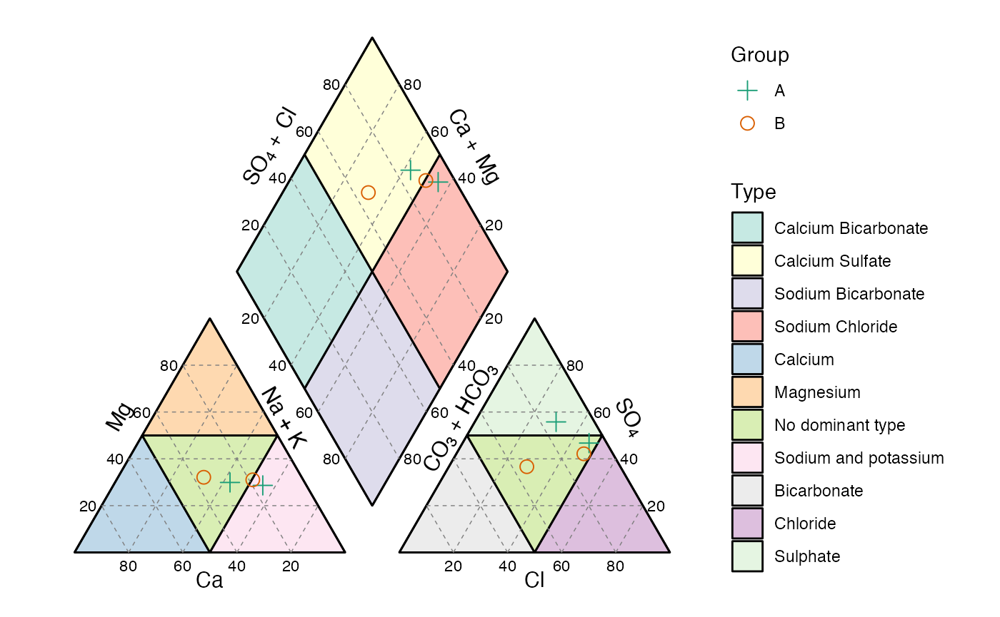
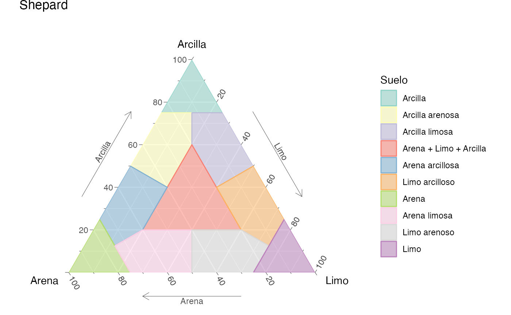
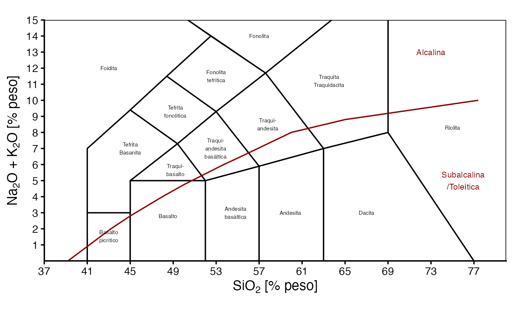

Classification Diagrams
Maximiliano Garnier-Villarreal
2026-05-19
Source:vignettes/classification_diagrams_vig.Rmd
classification_diagrams_vig.RmdIntroduction
This document shows how to display and use different classification
diagrams, available in the GMisc package, that are used
frequently in geosciences (for more info on each one you can click the
function name to go to the help page) these are (diagram -
function):
QAPF -
ternary_qap()andternary_fap()QAP for gabbros -
ternary_qap_g()QAP for mafic rocks -
ternary_qap_m_ol()andternary_qap_m_hbl()QAP for ultramafic rocks -
ternary_qap_um()andternary_qap_um_hbl()Feldspar classification -
ternary_feldspar()For provenance -
ternary_dickinson_qtfl()andternary_dickinson_qmflt()AFM -
ternary_afm()Pyroclastic rocks by size -
ternary_pyroclastic_size()and type -ternary_pyroclastic_type()Folk for sandstone classification -
ternary_folk_qfl()Folk for sedimentary rock classification -
ternary_folk_qfm()Folk for clastic rocks -
ternary_folk_gsm()andternary_folk_smc()For soil classification -
ternary_shepard()andternary_usda()Total Alkali Silica (TAS) -
TAS()Piper diagram -
piper_diagram()
Basic use
Static
A simple static diagram without data can be obtained by just calling the respective function. The result is a ggplot object. For the ternary diagramas is based on the ggtern package.

Static Folk ternary diagram for sandstones
Dynamic
To obtain a dynamic diagram the output argument must be
set to 'plotly', resulting in a plotly
object.
ternary_qap_m_ol(output = 'plotly')Dynamic QAP ternary diagram for mafic rocks
TAS(output = 'plotly')Dynamic TAS diagram
Add your data!!
To add your own data to the diagram a new table must be created (imported), where the names of the columns should preferably match the names of the axes for the corresponding diagram, or map them accordingly. To do this check the Names section where the respective names are given for each diagram, and to what axis they have to be mapped to.
In the case of the ternary diagrams, the sample (row) totals (adding the three components) are not required to add-up to 100%, this is done internally.
Adding some data is demostrated here by ploting two points on the QtFL and TAS diagrams, first by ploting the data in a static diagram (ggplot), and then ploting the same data in the dynamic diagram (plotly).
In the data for the ternary diagram (d) the first sample
(point) adds-up to a 100 but the second one does not, showing the point
made above.
d = data.frame(
sample = c('a', 'b'),
qt = c(40, 30),
f = c(40, 20),
l = c(20, 10)
)
d2 = data.frame(silica = c(58, 70), alkali = c(8, 4))| sample | qt | f | l |
|---|---|---|---|
| a | 40 | 40 | 20 |
| b | 30 | 20 | 10 |
| silica | alkali |
|---|---|
| 58 | 8 |
| 70 | 4 |
Static
For the ggplot object, data can be added using the
function geom_point, where the only argument that is
required is data, the rest can be omitted or modified.
ternary_dickinson_qtfl() +
geom_point(data = d, color = 'coral', size = 3, shape = 3, alpha = .7)
Static QtFL ternary diagram for provenance, with user’s data.
TAS() +
geom_point(
aes(x = silica, y = alkali),
data = d2,
color = 'coral',
size = 3,
shape = 3,
alpha = .7
)
Static TAS diagram, with user’s data.
Dynamic
For the plotly object it is a bit different for the bivariate and ternary diagrams.
For the ternary diagrams, data can be added using the function
add_trace, where the arguments data,
a, b, c,
type = "scatterternary", and mode = "markers"
are required, the rest can be changed. The vertices a,
b, and c, correspond to the top, bottom left,
and bottom right of the respective ternary diagram. The
name is what gets displayed in the legend, and the
marker defines the appearance.
ternary_dickinson_qtfl(output = 'plotly') %>%
add_trace(
a = ~qt,
b = ~f,
c = ~l,
data = d,
name = 'My data',
type = "scatterternary",
mode = "markers",
marker = list(size = 8, color = 'green', symbol = 4, opacity = .7),
hovertemplate = paste0('Qt: %{a}<br>', 'F: %{b}<br>', 'L: %{c}')
)Dynamic QtFL ternary diagram for provenance, with user’s data.
For the bivariate diagrams, data can be added using the function
add_markers, where the arguments data,
x, and y are required, the rest can be
changed. The name is what gets displayed in the legend, and
the marker defines the appearance. The
layout(showlegend = TRUE) forces the legend to show up.
TAS('plotly') %>%
add_markers(
x = ~silica,
y = ~alkali,
data = d2,
name = "My data",
marker = list(size = 8, color = 'orange', symbol = 3, opacity = .9)
) %>%
layout(showlegend = TRUE)Dynamic TAS diagram, with user’s data.
Piper diagram
The Piper diagram is a special case since the data needs
pre-processing in order to be plotted on the
piper_diagram() function. The following example shows how
to do this by using the piper_data_prep() function. This
diagram is only available as static (ggplot)
object.
d3 = data.frame(
Group = c('A', 'A', 'B', 'B'),
Ca = c(120, 150, 110, 52.6),
Mg = c(78, 160, 110, 28),
Na = c(210, 590, 340, 51.6),
K = c(4.2, 2, 3.6, 2.3),
HCO3 = c(181, 181, 189, 151),
CO3 = 0,
Cl = c(220, 744, 476, 72.2),
SO4 = c(560, 1020, 584, 126)
)
piper_data = piper_data_prep(d3)
piper_data %>%
kable(caption = 'Processed sample data for Piper diagram') %>%
kable_classic()| ID | x | y | Group | Ca | Mg | Na | K | HCO3 | CO3 | Cl | SO4 |
|---|---|---|---|---|---|---|---|---|---|---|---|
| 1 | 57.44804 | 25.89549 | A | 120.0 | 78 | 210.0 | 4.2 | 181 | 0 | 220.0 | 560 |
| 2 | 69.55813 | 24.81277 | A | 150.0 | 160 | 590.0 | 2.0 | 181 | 0 | 744.0 | 1020 |
| 3 | 65.86732 | 26.87266 | B | 110.0 | 110 | 340.0 | 3.6 | 189 | 0 | 476.0 | 584 |
| 4 | 47.74596 | 27.81167 | B | 52.6 | 28 | 51.6 | 2.3 | 151 | 0 | 72.2 | 126 |
| 1 | 177.93156 | 48.29770 | A | 120.0 | 78 | 210.0 | 4.2 | 181 | 0 | 220.0 | 560 |
| 2 | 190.11016 | 40.46926 | A | 150.0 | 160 | 590.0 | 2.0 | 181 | 0 | 744.0 | 1020 |
| 3 | 188.19094 | 36.50334 | B | 110.0 | 110 | 340.0 | 3.6 | 189 | 0 | 476.0 | 584 |
| 4 | 167.12036 | 31.73592 | B | 52.6 | 28 | 51.6 | 2.3 | 151 | 0 | 72.2 | 126 |
| 1 | 124.15673 | 141.43895 | A | 120.0 | 78 | 210.0 | 4.2 | 181 | 0 | 220.0 | 560 |
| 2 | 134.35376 | 137.04269 | A | 150.0 | 160 | 590.0 | 2.0 | 181 | 0 | 744.0 | 1020 |
| 3 | 129.80925 | 137.62392 | B | 110.0 | 110 | 340.0 | 3.6 | 189 | 0 | 476.0 | 584 |
| 4 | 108.56599 | 133.15561 | B | 52.6 | 28 | 51.6 | 2.3 | 151 | 0 | 72.2 | 126 |
Once the data is transformed it can be plotted using the
x and y values as the coordinates. As with the
other diagrams, further customization of the resulting object is
posible.
piper_diagram() +
geom_point(
aes(x, y, col = Group, shape = Group),
size = 3,
data = piper_data
) +
scale_color_brewer('Group', palette = 'Dark2') +
scale_shape_manual('Group', values = c(3, 21))
Piper diagram, with user’s data.
Names
These are the suggested names that your data should have for you to
be able to plot your data in the corresponding diagram, focusing on the
ternary diagrams. For the TAS diagram the names of the axes are
x and y. Other names can be used but they must
be mapped to the corresponding axis.
| diagram | x | y | z | a | b | c |
|---|---|---|---|---|---|---|
| afm | a | f | m | ~f | ~a | ~m |
| feldspars | Na | K | Ca | ~K | ~Na | ~Ca |
| folk_qfl | f | q | r | ~q | ~f | ~r |
| folk_qfm | f | q | m | ~q | ~f | ~m |
| folk_gsm | g | s | s | ~g | ~s | ~m |
| folk_smc | m | s | c | ~s | ~m | ~c |
| pyroclastic_size | lapilli | bb | ash | ~bb | ~lapilli | ~ash |
| pyroclastic_type | l | g | c | ~l | ~g | ~c |
| qap_g | cpx | p | opx | ~p | ~cpx | ~opx |
| qap_m_ol | ol | p | px | ~p | ~ol | px |
| qap_m_hbl | px | p | hbl | ~p | ~px | ~hbl |
| qap_um | opx | ol | cpx | ~ol | ~opx | ~cpx |
| qap_um_hbl | px | ol | hbl | ~ol | ~px | ~hbl |
| qap | a | q | p | ~q | ~a | ~p |
| fap | p | f | a | ~f | ~p | ~a |
| dickinson_qmflt | f | qm | lt | ~qm | ~f | ~lt |
| dickinson_qtfl | f | qt | l | ~qt | ~f | ~l |
| shepard | sand | clay | silt | ~clay | ~sand | ~silt |
| usda | sand | clay | silt | ~clay | ~sand | ~silt |
Español (Spanish)
Todos los diagramas se pueden generar en español, para ello es
necesario usar el argumento language y ponerlo igual a
'es', por defecto se despliegan en inglés
('en'). [A spanish version is available for all the
diagrams, to display this version the language argument
must be set to 'es', by default is set to english
('en').]
ternary_shepard(language = 'es')
Diagrama ternario de Shepard para la clasificación de suelos, en español
TAS(language = 'es')
Diagrama TAS, en español